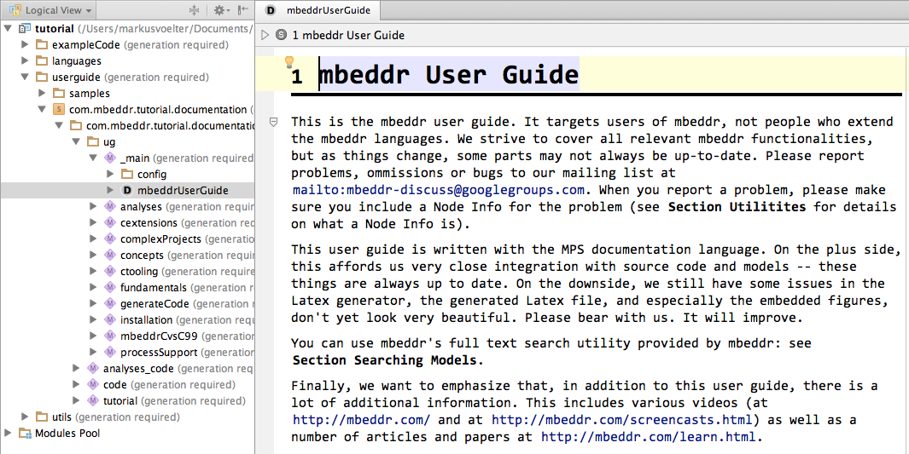

The user guide currently lives inside mbeddr itself; it is written with the mbeddr documentation
language that supports close integration with other mbeddr artifacts. To open the user guide, open
the tutorial project (which ships with the mbeddr distribution) and open the mbeddrUserGuide node. You can do this by opening
the node by name (via Ctrl-Shift-N) or by navigating there manually, according to the picture
below. Note that you may have to switch to the nicely readable presentation mode via the menu option
Code -> Projection Mode -> Presentation Mode.

High-Level Overview: (EN) A PDF (from Powerpoint) describing the overall mbeddr idea, includes a lot of screenshots of example code.
Two-Page Flyer: (EN) A two-page English flyer used at expos and trade fairs.
Generic Tools, Specific Languages Markus' PhD thesis addresses an approach for building domain-specific tools based on language engineering and language workbenches. The main example of the approach is mbeddr. It is covered in detail. [pdf]
Preliminary Experience of using mbeddr for Developing Embedded Software (MBEES Workshop, 2014): In this paper we discuss our experience so far with using mbeddr to develop real systems. The paper discusses several different systems, including the Smart Meter project by itemis France. [pdf]
Supporting Diverse Notations with MPS' Projectional Editor (GEMOC 2014 Workshop): In this paper we provide an overview over the notations supported by JetBrains MPS, including text, prose, math tables and graphics. The various supported notations are illustrated with examples from real-world systems, most of them are taken from mbeddr. [pdf]
mbeddr: Instantiating a Language Workbench in the Embedded Software Domain (Journal of Automated Software Engineering, 2013): This is our most comprehensive publication so far, providing a detailed look at mbeddr. In contrast to the next paper, it looks at mbeddr more from a tooling perspective (less from language engineering) and also contains some preliminary experience of using mbeddr. [pdf]
mbeddr: an Extensible C-based Programming Language and IDE for Embedded Systems (SplashCON/Wavefront 2012): This paper provides a general overview over mbeddr, emphasizing the language engineering perspective. It details some of the challenges for embedded software development, and how mbeddr addresses them. [pdf]
Extensible Debuggers for Extensible Languages (WSR 2013 Workshop): Language workbenches significantly reduce the effort for building extensible languages. However, they do not facilitate programmers with built-in debugging support for language extensions. This paper presents an extensible debugger architecture that enables debugging of language extensions. This is established by defining mappings between the base language and the language extensions. We show an implementation of our approach for the mbeddr language workbench. [pdf]
Extracting variability from C and lifting it to mbeddr (REVE 2013 Workshop): In this paper we describe approaches for lifting textual C code into mbeddr, understanding product-line variability expressed with preprocessor statements and factoring it into mbeddr's feature models. [pdf]
Requirements as First-Class Citizens (MBEES 2013 Workshop): In this paper we discuss mbeddr's approach to requirements engineering including: requirements themselves, paritial formalization of requirements using DSLs embedded in requirements, CRC-card-like high-level architectures and tracing from implementation artifacts to requirements and other "trace targets". [pdf, bib]
mbeddr - Extensible languages for embedded software development (HILT 2014): This paper is an overview of the mbeddr features and toolset mainly focusing on the applications for safety-critical domains. It points out how the various extensible modules could be used to create high-integrity and robust systems. [pdf]
Automated Domain-Specific C Verification with mbeddr (ASE 2014): This is the definitive paper on integrating C-level verification tools into mbeddr in a user-friendly way. It contains examples from the Pacemaker Challenge. [pdf]
Using Language Engineering to Lift Languages and Analyses at the Domain Level (NASA Formal Methods Symposium 2013): In this paper we discuss how we integrate the static checking of pre- and postconditions as well as protocol checking (based on C-level model checking) into mbeddr. [pdf, bib]
Language Engineering as an Enabler for Incrementally Defined Formal Analyses (FORMSERA 2012 Workshop): In this paper we discuss our approach for integrating formal verification into the development process. The approach relies on using language extension to provide meaningful abstractions directly in the language, avoiding the need to "reverse engineer" the semsntics from low-level implementation code. We show two examples for formal verification in mbeddr. [pdf]
Implementing Modular Domain Specific Languages and Analyses (accepted at Modevva 2012 Workshop; Best Paper and Best Presentation Awards): In this paper we discuss how language engineering makes the implementation of formal analyses simpler by reusing the same core language in several DSLs. By hooking the verification onto the single core language, we can get verification support for several DSLs with very limited effort. [pdf, bib]
Towards Usable Projectional Editors (SLE 2014): In this paper we discuss how MPS has improved the usability of the projectional editor over the last few years. This is obviously very relevant to (prospective) mbeddr users as well. The paper includes a survey of ca. 20 MPS/mbeddr users. [pdf]
This section collects (over time) a set of example applications developed with mbeddr as a means to illustrate its capabilities.
ASIC Testing: This case study describes how Daniel Stieger from die modellwerkstatt and Michael Gau from Bachmann electronics built a DSL and a C generator for testing ASICs. [pdf]
SmartMeter: This case study describes a real-world commercial development project for a Smart Meter application. It runs on a custom processor, requires a different compiler, makes use of several of the mbeddr default extensions and also uses a set of project-specific language extensions. [pdf]
Lego Mindstorms This case study is the original demo we built with mbeddr. Although a Lego Mindstorms robot seems like a joke, the case study used the OSEK operating system and contains interesting C extensions for OSEK. [pdf]
In this section we list other publications, typically contributed to online or print magazines.
mbeddr: Embedded-Entwicklung mit erweiterbarem C (ElektronikPRAXIS) Ein deutschsprachiger Überblick über mbeddr.
Sprachschöpfer: (bei heise developer) Noch ein deutschsprachiger Überblick über mbeddr.
mbeddr C: (at InfoQ) This is a recording of a presentation from the Code Generation 2012 conference in cambridge, providing an overview over mbeddr.
Since mbeddr relies on JetBrains MPS for the language engineering, learning about MPS itself is also useful for those people who want to extend mbeddr with their own languages. The MPS documentation page contains an extensive list of links to various documentation artifacts. Not all of them are up to date. Hence we refer to a few specific ones below:
The Shapes tutorial explains how to build a simple language in under two hours. It is a good first contact with MPS language engineering.
Fabien Campagne's book on MPS is now available on Google Play Books. It is a comprehensive introduction to the MPS language workbench.
Markus Voelter's book on DSL Engineering contains a detailed discussion of the concepts behind MPS in its Part III on language implementation. It is less detailed than Fabien's book, but also covers advanced aspects such as language modularization and composition.